능력단위 UI 디자인 (2001020707_19v3) / 4수준 · 평가방법 포트폴리오 (100점)
| 작업지시서 | 일곱 항목과 제출 형식이 여기 적혀 있습니다 |
| 프로토타입 | 화면 설계 교과의 Figma 파일. 채점 여섯 항목이 이것과 대조합니다 (실습 3) |
| 화면 흐름도 · 메뉴 구조도 | 같은 교과의 산출물. 실습 8 · 9 의 재료입니다 |
| 스타일가이드 | 색과 글꼴을 대조합니다 (실습 6) |
이 과목의 제출물은 스토리보드 한 벌입니다. 파일은 하나지만 그 안에 일곱 항목이 들어가야 하고, 채점은 항목별로 나뉩니다. 배점을 시간 배분의 기준으로 삼습니다.
| 묶음 | 항목 | 확인하는 것 | 배점 |
|---|---|---|---|
| ① 30점 | 화면 흐름도 | 프로토타입과 같은 경로인가 | 10 |
| 메뉴 구조 | 프로토타입과 같은가 · 요구사항을 만족하는가 · 라이프스타일이 보이는가 | 10 | |
| 화면정보 (LIST OF SCREEN) | 화면과 표시 내용이 맞는가 · SCREEN ID 가 올바른가 | 10 | |
| ② 70점 | FLOWCHART | 도형 · 흐름 · 판단 메시지 | 15 |
| PERMISSION | 유저별 접근 권한 | 5 | |
| POLICY | 화면별 정책 | 10 | |
| UI 기능정의 | 화면 · ID 일치 · Description · CheckPoint | 40 |
배점은 평가도구의 채점 항목을 항목별로 더한 값입니다. 정확한 항목 구성은 주요 감점 요인 과 각 단원에서 다시 짚습니다.
앞 과목인 화면 설계에서는 무엇을 만들지 정하고 그것을 프로토타입으로 보였습니다. 이 과목은 그 프로토타입을 남에게 넘길 수 있는 문서로 바꾸는 일을 다룹니다. 화면을 더 예쁘게 고치는 과목이 아닙니다.
두 단계를 나누어 두는 이유는 되물을 자리를 없애기 위해서입니다. 개발자가 「이 버튼은 왜 여기 있습니까」 하고 물었을 때 「그냥 그렇게 했습니다」 가 아니라 「콘셉트 기획서 3번 때문입니다」 라고 답할 수 있어야 합니다.
다섯 단계로 나누었습니다. 각 단계 끝에 그 단계에서 완성되는 항목과 충족되는 채점 항목 번호를 적어 두었습니다.
이 교안의 예제는 공공 체육시설 예약 서비스 하나로 통일했습니다. 화면 아홉 개짜리 작은 서비스입니다. 조별 주제는 다르겠지만 같은 절차를 밟으면 같은 모양의 문서가 나옵니다.
스토리보드는 슬라이드 한 벌입니다. 순서는 다음과 같이 잡습니다. 이 순서가 그대로 채점자가 넘겨 보는 순서가 됩니다.
| 쪽 | 내용 | 비고 |
|---|---|---|
| 1 | 표지 | 서비스명 · 조 이름 · 작성일 |
| 2 | 콘셉트 요약 | 페르소나 · 콘셉트 · 색 · 글꼴 한 장 |
| 3 | 화면 흐름도 | 채점 ① 01 |
| 4 | 메뉴 구조 | 채점 ① 02 · 03 · 04 |
| 5 | 화면정보 (LIST OF SCREEN) | 채점 ① 05 · 06 |
| 6 ~ 8 | FLOWCHART | 채점 ② 01 · 02 · 03 |
| 9 | PERMISSION | 채점 ② 04 |
| 10 | POLICY | 채점 ② 05 |
| 11 ~ | UI 기능정의 (화면 수만큼) | 채점 ② 06 ~ 09 |
UI 기능정의는 화면 하나에 한 쪽입니다. 화면이 아홉 개면 아홉 쪽이 됩니다. 전체 분량이 스무 쪽 안팎이 되는 것이 보통입니다.
목적 — 이 과목의 점수는 UI 기능정의에 몰려 있습니다 (40점). 앞의 여섯 항목은 그것을 쓰기 위한 준비에 가깝습니다. 앞에서 시간을 다 쓰고 UI 기능정의를 서둘러 채우면 크게 깎입니다.
| 묶음 | 항목 | 배점 | 열 시간이라면 |
|---|---|---|---|
| ① | 화면 흐름도 | 10 | 3 시간 |
| ① | 메뉴 구조 | 10 | |
| ① | 화면정보 (LIST OF SCREEN) | 10 | |
| ② | FLOWCHART | 15 | 2 시간 |
| ② | PERMISSION | 5 | |
| ② | POLICY | 10 | |
| ② | UI 기능정의 | 40 | 5 시간 |
쪽 내용 채점
---- -------------------------- -------------
1 표지 (서비스명 · 조 · 작성일)
2 콘셉트 요약 근거로 쓰입니다
3 화면 흐름도 ① 01
4 메뉴 구조 ① 02 · 03 · 04
5 화면정보 (LIST OF SCREEN) ① 05 · 06
6~8 FLOWCHART ② 01 · 02 · 03
9 PERMISSION ② 04
10 POLICY ② 05
11~ UI 기능정의 (화면 수만큼) ② 06 ~ 09
빈 쪽이 채워지지 않은 채 남아 있으면 그것이 그대로 감점 자리입니다. 제목만 넣어 두면 「아직 안 한 것」 이 한눈에 보입니다.
UI 기능정의는 화면 하나에 한 쪽입니다.
화면이 9개 → UI 기능정의 9쪽
앞의 10쪽 → 합쳐서 19~20쪽
전체가 스무 쪽 안팎이면 보통입니다.
열 쪽으로 끝났다면 UI 기능정의를 화면마다 안 만든 것입니다. 서른 쪽을 넘겼다면 한 쪽에 들어갈 것을 여러 쪽으로 벌린 것입니다.
| 이 과목은 | |
|---|---|
| 화면을 더 예쁘게 고치는 과목 | 아닙니다. 앞 과목 프로토타입을 남에게 넘길 수 있는 문서로 바꾸는 일입니다 |
| 새로 기획하는 과목 | 아닙니다. 채점 여섯 항목이 「프로토타입과 같은가」 를 봅니다 (실습 3) |
개발자가 「이 버튼은 왜 여기 있습니까」 하고 물었을 때 「그냥 그렇게 했습니다」 가 아니라 「콘셉트 기획서 3번 때문입니다」 라고 답할 수 있어야 합니다. 그래서 콘셉트를 먼저 뽑고 그대로 고르는 두 단계로 나눕니다.
| 이런 일이 생기면 | 볼 곳 |
|---|---|
| 무엇부터 할지 모르겠음 | 빈 슬라이드에 쪽 제목 열한 개부터 — 절차 2 |
| UI 기능정의를 몇 쪽 만들지 모름 | 프로토타입의 화면 수만큼입니다 — 실습 3 |
| 앞 과목 산출물이 없음 | 같은 조의 화면 설계 제출물을 받으십시오. 없으면 시작할 수 없습니다 |
제출물 — 없습니다. 쪽 제목만 넣은 빈 슬라이드와 시간표
스스로 확인 — ① UI 기능정의가 40점인 것을 압니까 ② 쪽 제목을 먼저 넣었습니까 ③ UI 기능정의 쪽 수를 셈했습니까
흐름도와 FLOWCHART 는 그리기 도구로 만들고, 완성한 그림을 슬라이드에 붙입니다. 슬라이드 안에서 직접 도형을 그리면 나중에 고치기가 어렵고 도형 크기가 제각각이 됩니다.
| 도구 | 쓰는 자리 | 준비 |
|---|---|---|
| draw.io | 화면 흐름도 · 메뉴 구조 · FLOWCHART | 가입 없이 씁니다. 도형 검색창에 flowchart 를 치면 규격 도형이 나옵니다. |
| Figma | UI 기능정의에 붙일 화면 이미지 | 앞 과목에서 만든 프로토타입 파일을 그대로 씁니다. 새로 만들지 않습니다. |
| PowerPoint | 스토리보드 본체 | 슬라이드 크기를 와이드스크린 16:9 로 맞춥니다. |
draw.io 는 처음 열면 왼쪽 도형 목록에 일반 도형만 나옵니다. FLOWCHART 도형은 따로 켜야 나옵니다.
목적 — 슬라이드 안에서 직접 도형을 그리면 나중에 고치기 어렵고 도형 크기가 제각각이 됩니다. 그리기는 밖에서, 슬라이드에는 붙이기만 합니다.
| 도구 | 쓰는 자리 | 준비 |
|---|---|---|
| draw.io | 화면 흐름도 · 메뉴 구조 · FLOWCHART | 가입 없이 씁니다 |
| Figma | UI 기능정의에 붙일 화면 이미지 | 앞 과목 프로토타입을 그대로 씁니다. 새로 만들지 않습니다 |
| PowerPoint | 스토리보드 본체 | 슬라이드 크기를 와이드스크린 16:9 로 |
처음 열면 왼쪽에 일반 도형만 나옵니다. FLOWCHART 도형은 따로 켜야 나옵니다.
① app.diagrams.net 을 엽니다
저장 위치를 묻는 창 → Device 를 고릅니다 (가입 안 해도 됩니다)
② 왼쪽 아래 More Shapes
목록에서 Flowchart 에 체크 → Apply
→ 단말 · 처리 · 판단 · 입출력 도형이 왼쪽에 나타납니다
③ 왼쪽 위 검색창에
decision · terminator · process · data
→ 이름을 외우기보다 검색해 쓰는 편이 빠릅니다
File → Export as → PNG
Transparent Background 끔 ← 켜면 슬라이드에서 글자가 안 보입니다
Zoom 200% ← 100% 면 흐려서 안 읽힙니다
Figma 에서 화면 하나를 고릅니다
→ 오른쪽 클릭 → Copy as → Copy as PNG
→ 슬라이드에 붙여넣기
| 이렇게 하면 | |
|---|---|
| 화면 캡처 도구로 찍기 | 주변 회색 바탕까지 들어가 지저분합니다 |
Copy as PNG |
프레임만 딱 잘려 나옵니다 |
스토리보드_3조_체육시설예약.pptx ← 제출물
draw/
흐름도.drawio ← 원본을 남깁니다
메뉴구조.drawio
flow_예약.drawio
img/
흐름도.png
…
.drawio 원본을 꼭 남기십시오.
PNG 만 있으면 한 글자 고치는 데도 처음부터 다시 그려야 합니다.
스토리보드는 반드시 한 번은 고칩니다 (실습 15).
| 이런 일이 생기면 | 볼 곳 |
|---|---|
| 판단 도형(마름모)이 안 보임 | More Shapes 에서 Flowchart 를 안 켰습니다 — 절차 1 |
| 붙여 넣으니 글자가 안 보임 | Transparent Background 를 껐습니까 — 절차 2 |
| 그림이 흐림 | Zoom 을 200% 로 — 절차 2 |
| 화면 둘레에 회색이 묻어남 | 캡처 도구로 찍었습니다. Copy as PNG — 절차 3 |
| 슬라이드가 4:3 | 디자인 → 슬라이드 크기 → 와이드스크린 |
| 도형을 슬라이드에서 그림 | 고칠 때 전부 다시 해야 합니다 — 밖에서 그리십시오 |
제출물 — 없습니다. 도형 하나를 내보내 슬라이드에 붙여 보십시오
스스로 확인 —
① Flowchart 도형을 켰습니까
② Zoom 200% 로 내보냈습니까
③ Copy as PNG 를 써 봤습니까
④ .drawio 원본을 남길 자리를 정했습니까
작업지시서의 첫 줄이 「앞서 제작했던 프로토타입을 참고하여」 입니다. 이 과목의 채점은 상당 부분 앞 과목 산출물과의 대조로 이루어집니다.
| 채점 항목 | 대조 대상 |
|---|---|
| ① 01 | 프로토타입의 화면 이동 ↔ 이 과목의 화면 흐름도 |
| ① 02 | 프로토타입의 GNB ↔ 이 과목의 메뉴 구조 |
| ① 05 | 프로토타입 화면의 표시 내용 ↔ 화면정보의 주요 표시 내용 |
| ② 06 | 프로토타입 화면 ↔ UI 기능정의에 붙인 화면 |
그래서 이 단계에서 할 일은 앞 과목 산출물을 열어 한 화면에 띄워 두는 것입니다. 프로토타입을 지금 고치고 싶어지더라도 고치지 않습니다. 고치면 이미 제출한 앞 과목 산출물과 어긋나 양쪽에서 점수를 잃습니다.
목적 — 작업지시서의 첫 줄이 「앞서 제작했던 프로토타입을 참고하여」 입니다. 이 과목의 채점은 상당 부분 앞 과목 산출물과의 대조로 이루어집니다.
| 채점 | 대조 대상 |
|---|---|
| ① 01 | 프로토타입의 화면 이동 ↔ 이 과목의 화면 흐름도 |
| ① 02 | 프로토타입의 GNB ↔ 이 과목의 메뉴 구조 |
| ① 05 | 프로토타입 화면의 표시 내용 ↔ 화면정보의 주요 표시 내용 |
| ② 06 | 프로토타입 화면 ↔ UI 기능정의에 붙인 화면 |
이 셋이 뒤의 모든 분량을 정합니다.
① 프로토타입에 화면이 몇 개인가 → 9개
= 화면정보의 줄 수
= UI 기능정의의 쪽 수
② 프로토타입의 GNB 대메뉴가 몇 개인가 → 4개
= 메뉴 구조의 기둥 수
③ 로그인해야 들어갈 수 있는 화면은 어느 것인가
= PERMISSION 의 × 자리
→ RESV-001 · RESV-002 · MYPG-001 · MYPG-002
이 세 줄을 적어 두면 뒤에서 「몇 개나 만들어야 하지」 를 다시 묻지 않게 됩니다.
| 꺼내 둘 것 | 어디에 쓰나 |
|---|---|
| 프로토타입 (Figma) | 화면 이미지 · 이동 · 표시 내용 |
| 화면 흐름도 | 실습 8 의 재료 |
| 메뉴 구조도 | 실습 9 의 재료 |
| 스타일가이드 | 실습 6 에서 색과 글꼴을 대조 |
앞 과목 산출물끼리도 어긋나 있을 수 있습니다.
화면 흐름도에는 : 예약 완료 → 마이페이지
프로토타입에는 : 예약 완료 → 메인
→ 프로토타입이 기준입니다 (채점이 프로토타입과 대조하므로)
→ 흐름도를 프로토타입에 맞추고, 「프로토타입 기준으로 맞춤」 한 줄 적습니다
고친 쪽에 «고친 이유» 를 한 줄 적어 두십시오. 안 적으면 채점자는 둘 중 어느 것이 실수인지 모릅니다.
| 이런 일이 생기면 | 볼 곳 |
|---|---|
| 프로토타입에 화면이 세 개뿐 | 앞 과목에서 덜 만들었습니다. 지금 늘리지 마십시오 — 셋으로 문서를 만들고 「프로토타입 3화면 기준」 을 적습니다 |
| Figma 링크가 안 열림 | 만든 사람에게 공유 범위를 바꿔 달라고 하십시오 |
| 앞 과목 산출물이 조마다 다름 | 제출한 것이 기준입니다. 안 낸 것은 없는 것입니다 |
| 프로토타입을 고치고 싶음 | 위 상자 — 양쪽에서 잃습니다 |
제출물 — 없습니다. 세 숫자와 어긋난 곳 목록을 적어 두십시오
스스로 확인 — ① 화면이 몇 개인지 압니까 ② 대메뉴가 몇 개인지 압니까 ③ 로그인 필요한 화면을 골라 뒀습니까 ④ 프로토타입을 안 고쳤습니까
「사용자가 편하게」 라는 말로는 아무것도 정해지지 않습니다. 글자를 키울지 말지, 절차를 한 쪽에 몰지 나눌지를 정하려면 그 결정을 받아 줄 사람이 있어야 합니다. 페르소나는 그 사람을 두 명으로 좁혀 놓은 것입니다.
두 명으로 잡는 이유는 한 명이면 결정이 한쪽으로 쏠리고, 셋 이상이면 서로 어긋나는 요구가 생겨 정리가 되지 않기 때문입니다. 가급적 쓰는 방식이 서로 다른 두 명으로 잡습니다.
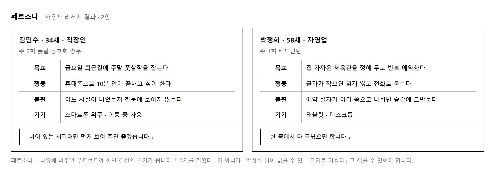
목적 — 「사용자가 편하게」 라는 말로는 아무것도 정해지지 않습니다. 글자를 키울지, 절차를 한 쪽에 몰지 나눌지를 정하려면 그 결정을 받아 줄 사람이 있어야 합니다.
| 몇 명 | 왜 |
|---|---|
| 한 명이면 | 결정이 한쪽으로 쏠립니다 |
| 두 명 | 이것이 적당합니다 |
| 셋 이상이면 | 서로 어긋나는 요구가 생겨 정리가 안 됩니다 |
이름 · 나이 · 직업 김민수 (28) · 직장인
목표 무엇을 하려고 들어오는가
퇴근 뒤 동료들과 풋살할 자리를 «빨리» 잡는다
행동 어떻게 쓰는가
점심시간에 휴대폰으로 3~4곳을 훑고 바로 결제한다
불편 지금 무엇이 걸리는가
시설마다 예약 사이트가 달라 빈 시간대를 모아 볼 수 없다
기기 무엇으로 보는가
휴대폰 (지하철에서 한 손으로)
「어디가 비었는지만 한눈에 보이면 바로 잡을 텐데요.」
인용 문장은 실제로 들은 말이 아니어도 됩니다. 다만 앞 네 칸에서 자연스럽게 나올 말이어야 합니다. 이 문장이 나중에 화면 결정의 근거로 인용됩니다.
박정희 (63) · 은퇴
목표 동네 체육관에서 주 2회 배드민턴을 꾸준히 친다
행동 집 컴퓨터로 천천히 보고, 확실한지 두 번 확인한다
불편 글자가 작고 단계가 많아 어디까지 했는지 모르겠다
기기 데스크톱 (큰 화면)
「예약이 «정말» 됐는지 한 번 더 보여 주면 좋겠어요.」
이것이 페르소나를 쓰는 진짜 까닭입니다.
결정할 것 김민수 박정희 우리의 결정
---------------------- ---------- ---------- --------------------
예약 단계를 몇 쪽으로 한 쪽 나눠서 한 쪽 + 단계 표시
확인 화면을 둘까 건너뛰고 꼭 필요 넣되 큰 버튼으로
본문 글자 크기 14px 16px 16px (박정희 기준)
「우리의 결정」 칸이 채점 ① 03 · 04 의 근거가 됩니다.
① 03 이 「사용자 요구사항을 만족하는 메뉴구조인가」,
① 04 가 「라이프스타일이 반영된 결과물인가」 를 봅니다.
이 표가 없으면 설명할 말이 없습니다.
김민수 → 「내 근처 지금 빈 곳」 을 먼저 누를 것 같다
박정희 → 「시설 안내」 로 들어가 천천히 볼 것 같다
→ 이 답이 메뉴 구조의 첫 번째 대메뉴가 됩니다 (실습 9)
| 이런 일이 생기면 | 볼 곳 |
|---|---|
| 둘이 비슷해짐 | 기기부터 다르게 잡으십시오 — 휴대폰과 데스크톱 |
| 네 칸이 안 채워짐 | 나이와 직업을 먼저 적으면 나머지가 따라옵니다 |
| 인용 문장이 안 나옴 | 불편 칸을 그 사람 말투로 바꿔 보십시오 |
| 실제 이용자를 모르겠음 | 주변에 그 서비스를 쓸 만한 사람을 떠올리십시오. 가족이나 조원이어도 됩니다 |
| 페르소나가 제출 항목에 없는데 왜 만드나 | ① 03 · 04 를 설명할 근거입니다. 콘셉트 요약(2쪽)에 한 장으로 들어갑니다 |
제출물 — 페르소나 카드 2장 + 부딪히는 자리 표 + 「처음 열면 어디를」 두 줄
스스로 확인 — ① 네 칸과 인용 문장이 있습니까 ② 두 사람이 서로 다릅니까 ③ 부딪히는 자리와 우리의 결정을 적었습니까 ④ 답이 메뉴 구조로 이어집니까
무드보드는 색판과 근거 표로 이루어집니다. 색을 고른 뒤 왜 골랐는지를 페르소나에서 끌어와 적는 자리가 함께 있습니다. 근거가 없는 색판은 채점 항목 ① 04 에서 설명할 말이 없어집니다.
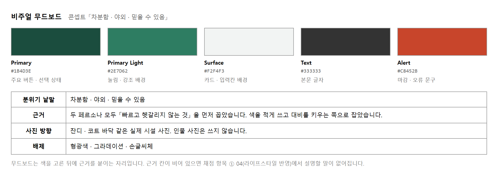
색 값은 #1B4D3E 처럼 여섯 자리로 적습니다. 「짙은 초록」 이라고만 적으면 조원마다 다른 색을 씁니다.
목적 — 무드보드는 색판과 «근거 표» 로 이루어집니다. 색을 고른 뒤 왜 골랐는지를 페르소나에서 끌어와 적는 자리가 함께 있습니다. 근거가 없으면 채점 ① 04 에서 설명할 말이 없어집니다.
차분함 · 야외 · 믿을 수 있음
형용사로 적습니다. 색을 먼저 고르고 낱말을 갖다 붙이면 근거가 어색해집니다 — 「초록을 골랐으니 자연스러움」 은 근거가 아니라 변명입니다.
역할 이름 값 쓰는 자리
---------- ---------- --------- --------------------------
주색 Deep Green #1B4D3E 버튼 · 선택 상태 · 헤더
밝은 주색 Mid Green #2F7A63 링크 · 보조 버튼 테두리
배경 Mist #F5F7F6 카드 뒤 · 구분 영역
본문 글자 Ink #1F2421 본문
경고 Alert #C2410C 마감 · 취소 안내
| 순서 | 하는 일 |
|---|---|
| 1 | 분위기 낱말 셋 |
| 2 | 주색 한 가지. 이 하나가 서비스의 인상을 정합니다 |
| 3 | 나머지 넷을 역할로 — 밝은 주색 · 배경 · 본문 · 경고 |
| 4 | 쓰지 «않을» 것을 적습니다 |
○ #1B4D3E
× 짙은 초록 ← 조원마다 다른 색을 씁니다
본문 글자로 쓸 색은 흰 바탕에서 4.5 대 1 이상이어야 합니다.
python contrast.py "#1B4D3E" "#2F7A63" "#F5F7F6" "#1F2421" "#C2410C"
#1B4D3E 흰 바탕 대비 9.64 : 1 본문에 써도 됩니다
#2F7A63 흰 바탕 대비 5.14 : 1 본문에 써도 됩니다
#F5F7F6 흰 바탕 대비 1.08 : 1 글자에 쓰지 마십시오 (배경이나 테두리로만)
#1F2421 흰 바탕 대비 15.76 : 1 본문에 써도 됩니다
#C2410C 흰 바탕 대비 5.18 : 1 본문에 써도 됩니다
#F5F7F6 은 거의 흰색이라 흰 바탕과 구별이 안 됩니다.
배경으로 쓰라고 고른 색이므로 맞습니다.
다만 「배경 전용」 이라고 표에 적어 두십시오 —
안 적으면 조원이 글자색으로 씁니다.색 근거
-------- --------------------------------------------------
주색 낱말 「차분함 · 야외」 — 박정희 님이 「눈이 편하다」 고
할 만한 톤. 원색 파랑은 뺐습니다
본문 박정희 님의 읽기 편의 — 대비 15.76 으로 가장 진하게
경고 김민수 님이 「마감」 을 한눈에 봐야 함 — 주색과 반대쪽 색
근거 칸에 페르소나 «이름» 이 들어가야 ① 04 「라이프스타일이 반영된 결과물인가」 를 설명할 수 있습니다.
쓰지 않는 것 : 형광색 · 그라데이션 · 손글씨체 · 그림자 3단 이상
배제 항목을 적어 두면 조원이 각자 작업할 때 어긋나는 일이 줄어듭니다. 「쓸 것」 만 적으면 안 적힌 것은 써도 되는 줄 압니다.
| 이런 일이 생기면 | 볼 곳 |
|---|---|
| 근거가 「예뻐서」 로 끝남 | 낱말을 먼저 안 적었습니다 — 절차 1 |
| 색이 여덟 개 | 다섯으로 줄이십시오 — 절차 2 상자 |
| 조원마다 색이 다름 | 여섯 자리 값으로 적었습니까 — 절차 3 |
| 본문이 안 읽힘 | 계산해 보십시오 — 절차 4. 4.5 미만이면 본문에 못 씁니다 |
| 근거에 페르소나가 없음 | ① 04 를 설명할 수 없습니다 — 절차 5 |
제출물 — 무드보드 1장(색판 + 근거 표) + 대비 계산 결과 + 쓰지 않을 것 한 줄
스스로 확인 — ① 낱말 셋을 먼저 적었습니까 ② 색이 다섯 이하입니까 ③ 여섯 자리 값으로 적었습니까 ④ 대비를 계산했습니까 ⑤ 근거에 페르소나 이름이 있습니까
페르소나와 무드보드에서 정한 것을 한 장으로 옮긴 표입니다. 스토리보드의 두 번째 쪽에 그대로 들어갑니다. 채점자가 이 한 장만 보고도 나머지 쪽을 예상할 수 있어야 합니다.
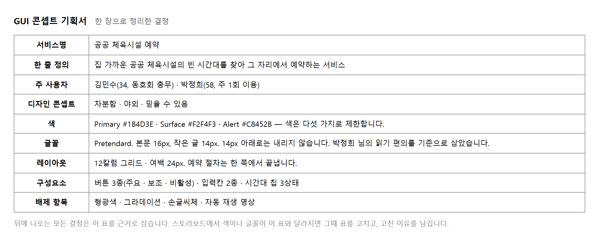
「누가 · 무엇을 · 어떻게」 순으로 한 문장에 담습니다.
약함 체육시설을 예약하는 서비스
권함 집 가까운 공공 체육시설의 빈 시간대를 찾아 그 자리에서 예약하는 서비스
아래 문장에는 「집 가까운」 과 「그 자리에서」 가 들어 있습니다. 이 두 마디가 뒤에서 메뉴 구조를 정할 때 기준이 됩니다.
목적 — 페르소나와 무드보드에서 정한 것을 한 장으로 옮긴 표입니다. 스토리보드의 두 번째 쪽에 그대로 들어갑니다. 채점자가 이 한 장만 보고도 나머지 쪽을 예상할 수 있어야 합니다.
항목 내용
------------ ------------------------------------------------------
서비스명 빈자리
한 줄 정의 집 가까운 공공 체육시설의 빈 시간대를 찾아
그 자리에서 예약하는 서비스
대상 김민수(28 · 직장인) · 박정희(63 · 은퇴)
분위기 낱말 차분함 · 야외 · 믿을 수 있음
주색 #1B4D3E (버튼 · 선택 상태)
보조색 #2F7A63 · #F5F7F6 · #1F2421 · #C2410C
글꼴 Pretendard — 박정희 님의 읽기 편의를 기준으로 본문 16px
레이아웃 1200 폭 · 12칼럼 · 간격 24
쓰지 않을 것 형광색 · 그라데이션 · 손글씨체
| 약함 | 체육시설을 예약하는 서비스 |
| 권함 | 집 가까운 공공 체육시설의 빈 시간대를 찾아 그 자리에서 예약하는 서비스 |
「집 가까운」 → 메뉴에 「내 주변」 이 들어갑니다
「그 자리에서」 → 상세 화면에 예약 버튼이 바로 있습니다
(목록 → 상세 → «장바구니» 같은 단계를 «안» 둡니다)
이 두 마디가 뒤에서 메뉴 구조를 정할 때 기준이 됩니다 (실습 9). 정의가 「예약하는 서비스」 로 끝나면 메뉴를 무엇으로 할지 정할 근거가 없습니다.
항목 스타일가이드 이 기획서 맞나
-------- ---------------- --------------- ------
주색 #1B4D3E #1B4D3E ○
본문 크기 16px 16px ○
글꼴 Pretendard Pretendard ○
칼럼 12 12 ○
이 과목이 콘셉트 도출과 요소 선정 두 단계로 나뉘는 까닭입니다.
개발자 : 「이 버튼은 왜 여기 있습니까」
× 그냥 그렇게 했습니다
○ 콘셉트 기획서 3번(대상) 때문입니다.
박정희 님이 데스크톱으로 천천히 보시므로
확인 단계를 한 번 더 두었습니다
| 이런 일이 생기면 | 볼 곳 |
|---|---|
| 한 줄 정의가 밋밋함 | 두 마디를 심으십시오 — 절차 2 |
| 스타일가이드와 색이 다름 | 절차 3 — 고친 이유를 적으십시오 |
| 앞 과목에 스타일가이드가 없음 | 여기서 정하고 「이 과목에서 새로 정함」 을 적습니다 |
| 아홉 줄이 안 채워짐 | 실습 4 · 5 의 결과를 옮기기만 하면 됩니다 |
제출물 — 기획서 1장(아홉 줄) + 스타일가이드 대조표 + 고친 것이 있으면 이유 한 줄
스스로 확인 — ① 한 줄 정의에 두 마디가 있습니까 ② 글꼴 줄에 페르소나 이름이 있습니까 ③ 스타일가이드와 대조했습니까 ④ 이 한 장으로 나머지를 예상할 수 있습니까
스토리보드의 일곱 항목은 서로를 가리킵니다. 화면 흐름도의 칸, 화면정보의 줄, FLOWCHART 의 제목, PERMISSION 의 줄, UI 기능정의의 머리글이 모두 같은 ID 를 씁니다. ID 를 나중에 정하면 일곱 군데를 모두 고쳐야 하고, 그 과정에서 반드시 하나가 빠집니다.
채점 항목 ② 07 은 「화면정보에 기입된 ID 와 UI 기능정의에 부여된 ID 가 동일한가」 하나만 봅니다. 10점짜리입니다. 규칙을 먼저 정해 두면 잃지 않는 점수입니다.
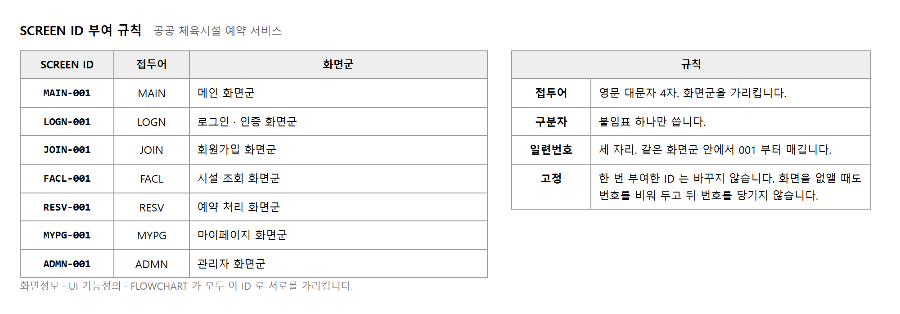
감점 화면정보에는 RESV-001, UI 기능정의에는 RSV-01
권함 두 곳 모두 RESV-001. 표에서 복사해 붙입니다
목적 — 스토리보드의 일곱 항목은 서로를 가리킵니다. 흐름도의 칸, 화면정보의 줄, FLOWCHART 의 제목, PERMISSION 의 줄, UI 기능정의의 머리글이 모두 같은 ID 를 씁니다.
① 화면을 무리로 묶는다 아홉 화면이면 대체로 다섯~일곱 무리
② 무리마다 영문 넉 자 예약 RESV · 시설 FACL · 마이페이지 MYPG
③ 무리 안에서 001 부터 화면이 하나뿐인 무리도 001
④ 표로 만들어 조원에게 이 표가 곧 화면정보의 뼈대
한글 발음을 그대로 옮기지 말고 영어 낱말을 줄입니다.
YEYAK 이 아니라 RESV 입니다.
SCREEN ID,화면명,주요 표시 내용
MAIN-001,메인,배너 · 인기 시설 · 지역 검색
FACL-001,시설 목록,지역 필터 · 종목 필터 · 시설 카드 · 페이지
FACL-002,시설 상세,사진 · 소개 · 시간대 표 · 예약 버튼
RESV-001,예약 신청,시설명 · 날짜 · 시간대 · 인원 · 신청 버튼
RESV-002,예약 완료,예약번호 · 일시 · 안내 문구
LOGN-001,로그인,아이디 · 비밀번호 · 로그인 버튼
JOIN-001,회원가입,약관 · 아이디 · 비밀번호 · 이메일
MYPG-001,마이페이지,내 정보 · 예약 내역 바로가기
MYPG-002,예약 내역,예약 목록 · 상태 · 취소 버튼
눈으로 대조하면 반드시 하나를 놓칩니다. 화면정보를 기준으로 두고 나머지를 견줍니다.
python sbcheck.py
화면정보 9 · UI 기능정의 8 · PERMISSION 9 · POLICY 6
지적 4건
· UI 기능정의 의 「RSV-01」 는 규칙(영문 4자-숫자 3자리)에 안 맞습니다
· RESV-001 예약 신청 → UI 기능정의 에 «없습니다»
· MYPG-002 예약 내역 → UI 기능정의 에 «없습니다»
· P-06 이 가리키는 MYPG-003 는 화면정보에 «없습니다»
| 잡힌 것 | 무슨 일이 난 것인가 |
|---|---|
RSV-01 |
줄여 쓰다 규칙이 깨졌습니다.
화면정보에는 RESV-001, UI 기능정의에는 RSV-01 —
② 07 이 그대로 걸립니다 |
| 같은 줄에 둘이 같이 잡힘 | ID 하나가 틀리면 「규칙 위반」 과 「없음」 이 짝으로 나옵니다. 이 짝이 보이면 거의 오타입니다 |
MYPG-003 |
POLICY 가 있지도 않은 화면을 가리킵니다. 화면을 지우면서 정책을 안 고쳤습니다 |
# RSV-01 을 RESV-001 로 · 빠진 쪽을 만들고 · P-06 을 MYPG-002 로
python sbcheck.py
화면정보 9 · UI 기능정의 9 · PERMISSION 9 · POLICY 6
대조 통과 — 일곱 항목이 같은 ID 를 씁니다
| 감점 | 권함 |
|---|---|
화면정보에는 RESV-001,
UI 기능정의에는 RSV-01 |
두 곳 모두 RESV-001.
표에서 «복사해» 붙입니다 |
손으로 다시 치지 마십시오. 스무 번 치면 한 번은 틀립니다.
| 이런 일이 생기면 | 볼 곳 |
|---|---|
| 무리가 열 개 넘음 | 너무 잘게 나눴습니다. 성격이 같은 것끼리 묶으십시오 |
| 무리에 화면이 하나뿐 | 괜찮습니다. 001 을 붙입니다 — 절차 1 의 ③ |
| 영문 넉 자가 안 떠오름 | 앞 넉 자면 됩니다 — LOGIN → LOGN |
| ID 를 바꾸고 싶음 | 지금이 마지막 기회입니다. 실습 10 이후엔 일곱 군데입니다 |
| 화면이 중간에 늘어남 | 번호를 밀지 말고 그 무리 끝에 붙이십시오 |
제출물 — ID 규칙 네 줄 + 화면군 목록 + 대조 통과 화면
스스로 확인 — ① 규칙을 먼저 정했습니까 ② ID 꼴이 영문 4자-숫자 3자리 로 같습니까 ③ 대조를 돌렸습니까 ④ 표에서 복사해 쓰고 있습니까
이름이 비슷해 자주 헷갈립니다. 둘은 다루는 것이 다릅니다.
| 구분 | 칸에 들어가는 것 | 답하는 질문 |
|---|---|---|
| 화면 흐름도 | 화면 (SCREEN ID) | 어느 화면에서 어느 화면으로 갑니까 |
| FLOWCHART | 처리 단계 | 한 화면 안에서 무슨 일이 어떤 순서로 일어납니까 |
화면 흐름도는 서비스 전체에 한 장이고, FLOWCHART 는 판단이 들어 있는 화면마다 한 장입니다.
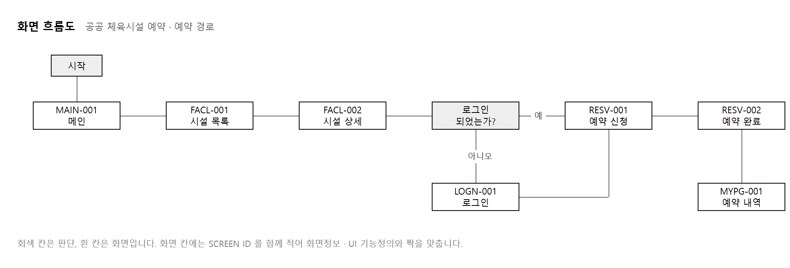
목적 — 채점 ① 01 입니다. 먼저 화면 흐름도와 FLOWCHART 를 헷갈리지 마십시오. 이름이 비슷하지만 다루는 것이 다릅니다.
| 구분 | 칸에 들어가는 것 | 답하는 질문 |
|---|---|---|
| 화면 흐름도 | 화면 (SCREEN ID) | 어느 화면에서 어느 화면으로 갑니까 |
| FLOWCHART | 처리 단계 | 한 화면 «안» 에서 무슨 일이 어떤 순서로 일어납니까 |
화면 흐름도는 서비스 전체에 한 장, FLOWCHART 는 판단이 들어 있는 화면마다 한 장입니다.
프로토타입을 열고 첫 화면부터 예약이 끝날 때까지 한 번 누릅니다
지나간 화면을 순서대로 적습니다
MAIN-001 → FACL-001 → FACL-002 → LOGN-001 → RESV-001 → RESV-002
머리로 짐작해 그리면 프로토타입과 어긋납니다 — ① 01 이 그것을 봅니다.
| 하는 일 | ||
|---|---|---|
| 1 | 주 경로를 가로로 한 줄 | 가장 흔한 경로. 그림의 뼈대가 됩니다 |
| 2 | 갈라지는 자리에 판단 | 로그인 여부 · 권한 · 잔여 여부. 회색으로 채웁니다 |
| 3 | 갈래마다 「예 · 아니오」 | 빠지면 읽는 사람이 방향을 모릅니다 |
| 4 | 되돌아오는 선 | 로그인 뒤 원래 가려던 화면으로. 빠뜨리면 흐름이 끊긴 채 끝납니다 |
| 5 | 칸마다 SCREEN ID | 이름만 적으면 어느 줄과 짝인지 안 보입니다 |
선을 표로 적어 두면 셀 수 있습니다.
출발,도착,조건
MAIN-001,FACL-001,시설 찾기
FACL-001,FACL-002,
FACL-002,RESV-001,로그인함
FACL-002,LOGN-001,로그인 안 함
LOGN-001,RESV-001,되돌아오는 선
…
python flowmap.py
화면 9 · 선 9
지적 4건
· JOIN-001 회원가입 → 들어가기만 하고 «나오는 선이 없습니다» (막다른 길)
· MAIN-001 에서 2 갈래로 갈라지는데 «조건이 하나도 없습니다»
· MYPG-002 예약 내역 → 들어가기만 하고 «나오는 선이 없습니다»
· RESV-002 예약 완료 → 들어가기만 하고 «나오는 선이 없습니다»
# 나오는 선 셋을 더하고 갈림길에 조건을 적은 뒤
python flowmap.py
화면 9 · 선 12
대조 통과 — 모든 화면이 흐름도에 있고 막다른 길이 없습니다
| 확인 | |
|---|---|
| 화면정보의 화면이 모두 흐름도에 나오는가 | 가장 잦은 누락입니다 — 목록에는 있는데 그림에 없습니다 |
| 끝이 없는 화면이 있는가 | 들어가기만 하고 나오는 선이 없으면 막다른 길 |
| 모든 칸에 SCREEN ID 가 있는가 | 없으면 화면정보와 짝지을 수 없습니다 |
| 이런 일이 생기면 | 볼 곳 |
|---|---|
| 목록에는 있는데 그림에 없음 | 회원가입 · 로그인처럼 주 경로 밖 화면입니다 — 절차 3 |
| 막다른 길이 남음 | 「끝나는 화면」 에서도 어디로 가는지 그리십시오 |
| 선에 「예 · 아니오」 가 없음 | 절차 2 의 3 — 방향을 알 수 없습니다 |
| 되돌아오는 선이 없음 | 로그인 뒤 어디로 갑니까. 메인이면 흐름이 끊깁니다 |
| 흐름도가 FLOWCHART 처럼 됨 | 칸에 처리 단계를 적었습니다. 화면을 적으십시오 — 위 표 |
| 그림이 복잡해서 안 읽힘 | 주 경로를 가로 한 줄로 펴십시오 — 절차 2 의 1 |
제출물 — 흐름도 1장(판단 회색 · 예/아니오 · 되돌아오는 선) + 대조 통과 화면
스스로 확인 — ① 프로토타입을 눌러 보고 그렸습니까 ② 모든 화면이 그림에 있습니까 ③ 막다른 길이 없습니까 ④ 갈래마다 조건이 적혔습니까 ⑤ 칸마다 SCREEN ID 가 있습니까
메뉴 구조 한 장이 채점 항목 세 개를 받습니다. 각각 보는 것이 다릅니다.
| 항목 | 보는 것 | 대비 |
|---|---|---|
| ① 02 | 프로토타입과 같은가 | 프로토타입에 없는 메뉴를 넣지 않습니다 |
| ① 03 | 사용자 요구사항을 만족하는가 | 요구사항 정의서의 기능이 어느 메뉴에 걸리는지 모두 확인합니다 |
| ① 04 | 라이프스타일이 반영되어 있는가 | 페르소나가 가장 자주 쓸 메뉴를 앞에 둡니다 |
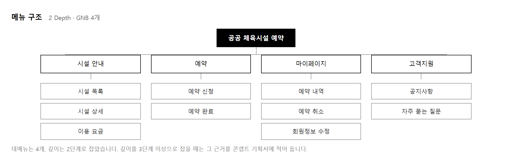
깊이는 2단계를 기본으로 잡습니다. 3단계로 내려가려면 근거가 있어야 합니다.
감점 프로토타입에는 없는 「관심 시설」 메뉴가 구조도에 들어 있음
권함 프로토타입을 옆에 띄워 두고 메뉴 이름을 하나씩 옮겨 적습니다
목적 — 메뉴 구조 한 장이 채점 항목 셋을 받습니다. 그런데 보는 것이 서로 다릅니다. 하나만 맞추면 나머지 둘이 빕니다.
| 항목 | 보는 것 | 대비 |
|---|---|---|
| ① 02 | 프로토타입과 같은가 | 프로토타입에 없는 메뉴를 넣지 않습니다 |
| ① 03 | 사용자 요구사항을 만족하는가 | 요구사항 정의서의 기능이 어느 메뉴에 걸리는지 모두 확인 |
| ① 04 | 라이프스타일이 반영되어 있는가 | 페르소나가 가장 자주 쓸 메뉴를 앞에 둡니다 |
대메뉴,하위메뉴,SCREEN ID
내 주변,,FACL-001
시설 안내,시설 목록,FACL-001
시설 안내,시설 상세,FACL-002
예약,예약 신청,RESV-001
예약,예약 완료,RESV-002
마이페이지,마이페이지,MYPG-001
마이페이지,예약 내역,MYPG-002
하위 메뉴 이름은 화면정보의 «화면명» 과 같게 씁니다. 이름을 조금이라도 다듬으면 대조가 깨집니다.
python menucheck.py
대메뉴 5 · 줄 8 · 깊이 2단
내 주변 · 시설 안내 · 예약 · 마이페이지 · 관심 시설
지적 2건
· 「내 정보」 는 화면정보의 화면명 「마이페이지」 과 «다릅니다»
· 「관심 시설」 에 SCREEN ID 가 «없습니다» — 갈 화면이 없는 메뉴입니다
| 감점 | 권함 |
|---|---|
| 프로토타입에는 없는 「관심 시설」 메뉴가 구조도에 들어 있음 | 프로토타입을 옆에 띄워 두고 메뉴 이름을 하나씩 옮겨 적습니다 |
# 이름을 화면명에 맞추고 · 갈 곳 없는 메뉴를 빼면
python menucheck.py
대메뉴 4 · 줄 7 · 깊이 2단
내 주변 · 시설 안내 · 예약 · 마이페이지
대조 통과 — 메뉴가 화면정보와 맞습니다
| 깊이 | 언제 |
|---|---|
| 2단 (기본) | 하위 메뉴가 대메뉴마다 다섯 개 안쪽일 때. 페르소나가 이동 중에 쓰는 사람이면 누르는 횟수를 줄이는 쪽이 맞습니다 |
| 3단 | 하위가 여덟을 넘어 한 화면에 다 안 보일 때. 콘셉트 기획서에 「항목 수가 많아 한 단계 더 나눔」 근거를 적어 둡니다 |
3단으로 내리려면 «근거» 가 있어야 합니다. 근거 없이 깊게 만들면 ① 04 에서 설명할 말이 없습니다.
요구사항 걸리는 메뉴 확인
---------------- ------------------ ------
상품(시설) 검색 시설 안내 > 시설 목록 ○
예약하기 예약 > 예약 신청 ○
예약 취소 마이페이지 > 예약 내역 ○
회원가입 (메뉴에 없음) × ← 로그인 화면에서 들어갑니다
× 가 나와도 괜찮습니다 — 「메뉴가 아니라 어디서 들어가는지」 를 적어 두면 됩니다. 아무 데서도 못 들어가면 그때가 문제입니다.
김민수(28 · 이동 중 · 빨리) → 「내 주변」 을 먼저 누를 것
박정희(63 · 집 · 천천히) → 「시설 안내」 로 들어가 볼 것
→ 「내 주변」 을 «첫 번째» 대메뉴로 둡니다
근거 : 김민수 님이 이동 중에 쓰므로 «누르는 횟수»를 줄였습니다
이 한 줄이 ① 04 의 답입니다. 순서를 아무렇게나 두면 「라이프스타일이 반영됐다」 고 말할 수 없습니다.
| 이런 일이 생기면 | 볼 곳 |
|---|---|
| 프로토타입에 없는 메뉴가 있음 | 빼십시오 — 절차 2 |
| 메뉴 이름이 화면명과 다름 | 화면명을 복사해 붙이십시오 |
| 대메뉴가 일곱 넘음 | 한 줄에 안 들어갑니다. 넷에서 다섯이 적당합니다 |
| 하위가 여덟 넘음 | 3단을 생각하되 근거를 적으십시오 — 절차 3 |
| 순서를 왜 그렇게 했는지 못 말함 | 절차 5 — 페르소나로 설명하십시오 |
제출물 — 메뉴 구조도 1장 + 대조 통과 화면 + 요구사항 걸어 본 표 + 순서 근거 한 줄
스스로 확인 — ① 프로토타입에 없는 메뉴가 없습니까 ② 이름이 화면명과 같습니까 ③ 깊이에 근거가 있습니까 ④ 요구사항이 다 걸립니까 ⑤ 첫 대메뉴를 페르소나로 설명할 수 있습니까
화면 하나가 한 줄입니다. 이 표의 줄 수가 곧 UI 기능정의의 쪽 수가 됩니다.
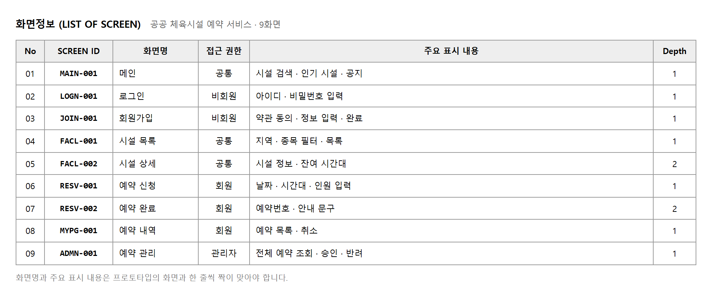
채점 항목 ① 05 는 「화면정보에 표시되는 내용의 구조와 UI 화면이 일치하는가」 를 봅니다. 프로토타입 화면을 열어 놓고 눈에 보이는 것을 순서대로 적습니다.
약함 시설을 볼 수 있는 화면
권함 지역 · 종목 필터 · 목록
아래처럼 적으면 채점자가 프로토타입 화면과 한 눈에 대조할 수 있습니다. 기능을 설명하지 말고 화면에 놓인 것을 적습니다.
목적 — 화면 하나가 한 줄입니다. 이 표의 줄 수가 곧 UI 기능정의의 쪽 수가 됩니다. 채점 ① 05 가 「화면정보에 표시되는 내용의 구조와 UI 화면이 일치하는가」 를 봅니다.
| 약함 | 시설을 볼 수 있는 화면 |
| 권함 | 지역 · 종목 필터 · 목록 |
기능을 설명하지 말고 «화면에 놓인 것» 을 적습니다. 아래처럼 적으면 채점자가 프로토타입 화면과 한눈에 대조할 수 있습니다. 「볼 수 있는 화면」 은 대조할 대상이 없습니다.
SCREEN ID,화면명,주요 표시 내용
MAIN-001,메인,배너 · 인기 시설 · 지역 검색
FACL-001,시설 목록,지역 필터 · 종목 필터 · 시설 카드 · 페이지
FACL-002,시설 상세,사진 · 소개 · 시간대 표 · 예약 버튼
RESV-001,예약 신청,시설명 · 날짜 · 시간대 · 인원 · 신청 버튼
RESV-002,예약 완료,예약번호 · 일시 · 안내 문구
LOGN-001,로그인,아이디 · 비밀번호 · 로그인 버튼
JOIN-001,회원가입,약관 · 아이디 · 비밀번호 · 이메일
MYPG-001,마이페이지,내 정보 · 예약 내역 바로가기
MYPG-002,예약 내역,예약 목록 · 상태 · 취소 버튼
지역 필터 · 종목 필터 · 시설 카드 · 페이지 라고 적어 두면
그 화면에 번호가 넷 붙는다는 것이 이미 정해집니다.
여기를 성의 없이 쓰면 실습 14 에서 다시 생각해야 합니다.표를 다 채운 뒤 아무 줄이나 셋을 골라 프로토타입의 그 화면을 열고 적은 것이 실제로 그 자리에 있는지 봅니다.
FACL-001 시설 목록
적은 것 : 지역 필터 · 종목 필터 · 시설 카드 · 페이지
화면 : 지역 필터 ○ · 종목 필터 ○ · 시설 카드 ○ · 페이지 ×
↑ 프로토타입엔 «없습니다»
→ 둘 중 하나 : 프로토타입에 맞춰 «페이지» 를 빼거나,
빼지 말고 「프로토타입 미구현」 을 비고에 적습니다
세 줄만 확인해도 어긋난 줄이 있으면 금방 드러납니다. 아홉 줄을 다 볼 것 없습니다.
이 표가 기준입니다. 뒤의 모든 표가 여기를 가리킵니다.
python sbcheck.py
화면정보 9 · UI 기능정의 9 · PERMISSION 9 · POLICY 6
대조 통과 — 일곱 항목이 같은 ID 를 씁니다
화면정보 9줄
→ UI 기능정의 9쪽 (실습 14)
→ PERMISSION 9줄 (실습 12)
→ 흐름도에 9칸 (실습 8)
이 숫자가 서로 다르면 어딘가 빠진 것입니다. 실습 12 · 14 에서 이 숫자와 맞는지만 보면 됩니다.
| 이런 일이 생기면 | 볼 곳 |
|---|---|
| 표시 내용이 「~하는 화면」 으로 끝남 | 기능을 설명했습니다 — 절차 1 |
| 적은 것이 화면에 없음 | 절차 3 — 빼거나 비고에 적으십시오 |
| 화면에 있는데 안 적음 | ① 05 에서 「구조가 다르다」 로 걸립니다 |
| 줄 수가 흐름도의 칸 수와 다름 | 실습 8 로 돌아가십시오 — 어느 쪽이 빠졌습니까 |
| 한 화면에 표시 내용이 열 가지 넘음 | 주요 한 것만 적습니다. 너덧이면 충분합니다 |
제출물 — 화면정보 표 1장 + 세 줄 되짚은 결과 + 대조 통과 화면
스스로 확인 — ① 화면에 놓인 것을 적었습니까 ② 세 줄을 되짚어 봤습니까 ③ ID 가 화면군 목록과 같습니까 ④ 줄 수를 적어 뒀습니까
FLOWCHART 는 도형마다 뜻이 정해져 있습니다. 채점 항목 ② 01 이 「각 항목별 도형을 올바르게 작성하였는가」 를 봅니다. 도형을 섞어 쓰면 그 자리에서 감점됩니다.
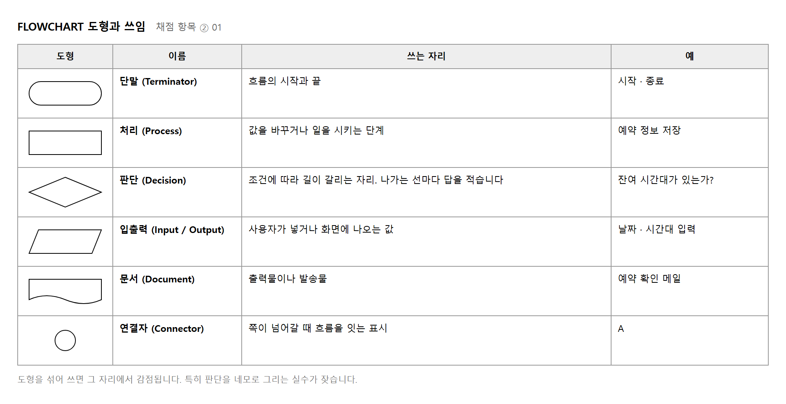
모든 화면을 그리지 않습니다. 안에서 판단이 일어나는 화면만 그립니다. 아홉 화면짜리 서비스라면 대개 두세 장입니다.
반면 시설 목록처럼 불러와 보여 주기만 하는 화면은 그리지 않아도 됩니다.
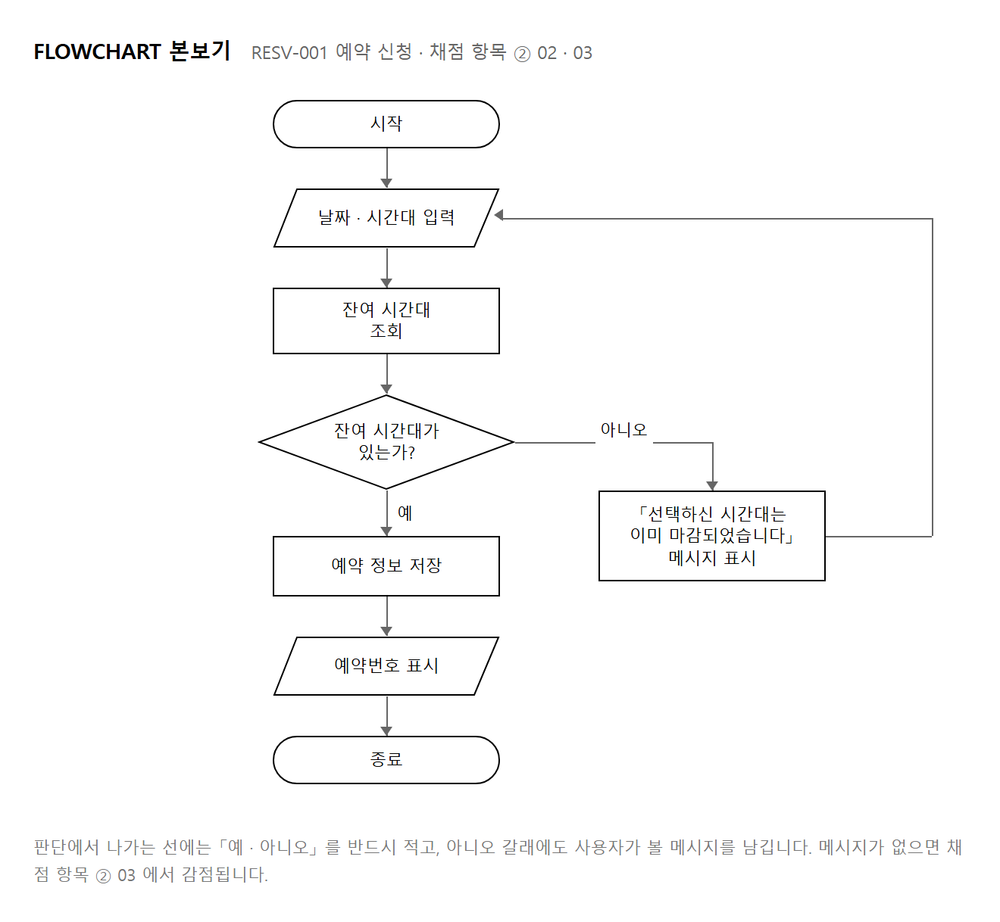
목적 — 채점 ② 01 · 02 · 03 으로 15점입니다. 모든 화면을 그리지 않습니다. 안에서 «판단» 이 일어나는 화면만 그립니다 — 대개 두세 장입니다.
| 그리는 화면 | 판단하는 것 |
|---|---|
| 예약 신청 | 잔여 시간대가 있는가 |
| 로그인 | 아이디와 비밀번호가 맞는가 |
| 회원가입 | 중복 아이디인가 |
| 안 그려도 됩니다 — 불러와 보여 주기만 합니다 |
둥근 네모 시작 · 종료
평행사변형 사용자가 넣는 값 날짜 · 시간대 · 인원
네모 시스템이 하는 일 조회 · 저장 · 계산
마름모 판단 잔여 시간대가 있는가?
화살표 흐름
주석 메시지 문구
채점 ② 01 이 「각 항목별 도형을 올바르게 작성하였는가」 를 봅니다. 판단을 네모로 그리는 실수가 가장 잦습니다.
① 시작 · 종료 를 위아래에 놓고 사이를 채웁니다
② 사용자가 넣는 값 → 평행사변형
③ 시스템이 하는 일 → 네모
④ 갈라지는 자리 → 마름모
⑤ 아니오 갈래에 «메시지»
⑥ 되돌아오는 선을 그려 흐름을 닫습니다
| 약함 | 잔여 시간대 확인
→ 판단인지 처리인지 구분되지 않습니다 |
| 권함 | 잔여 시간대가 있는가?
→ 물음표가 붙어 있으면 나가는 선에 답을 적어야 한다는 것이 저절로 보입니다 |
마름모 안은 예 · 아니오로 답할 수 있는 문장이어야 합니다. 「어떤 시간대인가?」 처럼 둘로 안 갈라지는 물음은 판단이 아닙니다.
┌─────────────────────┐
│ 잔여 시간대가 있는가? │ ◇
└──────┬───────┬──────┘
예 │ │ 아니오
▼ ▼
[예약 저장] 「이미 마감된 시간대입니다」
│ │
▼ └──▶ (시간대 고르기로 되돌아감)
(RESV-002)
화면 흐름도 칸 = 화면 서비스 전체에 한 장
FLOWCHART 칸 = 처리 단계 판단 있는 화면마다 한 장
FLOWCHART 안에 SCREEN ID 칸이 여럿 보이면 흐름도를 한 번 더 그린 것입니다 — 다시 보십시오.
FLOWCHART — RESV-001 예약 신청
제목의 ID 가 화면정보와 같아야 짝지을 수 있습니다 (실습 7).
| 이런 일이 생기면 | 볼 곳 |
|---|---|
| 판단을 네모로 그림 | 가장 잦은 실수입니다 — 절차 1 |
| 마름모 안이 명사로 끝남 | 물음표로 바꾸십시오 — 절차 3 |
| 나가는 선에 「예 · 아니오」 가 없음 | 물음표로 안 적었기 때문입니다 — 절차 3 |
| 아니오 갈래가 바로 종료 | ② 03 이 빕니다 — 절차 4 |
| 아홉 장을 다 그림 | 판단 있는 화면만입니다. 두세 장이면 됩니다 |
| 마름모 도형이 안 보임 | More Shapes 에서 Flowchart 를 켜십시오 (실습 2) |
제출물 — FLOWCHART 2~3장(제목에 ID · 예/아니오 · 메시지 · 되돌아오는 선)
스스로 확인 — ① 도형을 섞어 쓰지 않았습니까 ② 마름모가 물음표로 끝납니까 ③ 아니오 갈래에 메시지가 있습니까 ④ 되돌아오는 선으로 닫혔습니까 ⑤ 제목에 ID 가 있습니까
세로는 화면, 가로는 유저입니다. 유저는 세 종류로 잡는 것이 보통입니다.
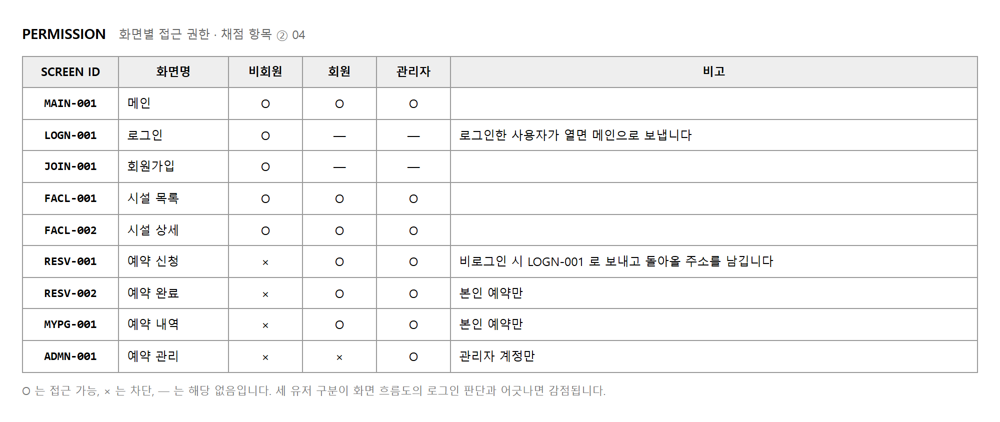
PERMISSION 의 × 자리는 화면 흐름도의 로그인 판단과 짝을 이룹니다. 예약 신청이 비회원에게 × 라면, 흐름도에는 예약 신청 앞에 로그인 판단이 있어야 합니다. 둘이 어긋나면 채점 항목 ② 04 에서 감점됩니다.
× 라고만 적으면 개발자가 어떻게 막을지 알 수 없습니다. 비고에 방법까지 적습니다.
약함 예약 신청 · 비회원 ×
권함 예약 신청 · 비회원 × · 비고 「LOGN-001 로 보내고 돌아올 주소를 남김」
목적 — 채점 ② 04 입니다. 5점이지만 표 한 장이면 끝납니다. 다만 × 자리가 화면 흐름도와 어긋나면 그 자리에서 깎입니다.
SCREEN ID,비회원,회원,관리자,비고
MAIN-001,O,O,O,
FACL-001,O,O,O,
FACL-002,O,O,O,
RESV-001,X,O,O,LOGN-001 로 보내고 돌아올 주소를 남김
RESV-002,X,O,O,본인 예약만
LOGN-001,O,O,O,이미 로그인했으면 MAIN-001 로
JOIN-001,O,X,X,이미 회원이면 MAIN-001 로
MYPG-001,X,O,O,
MYPG-002,X,O,O,본인 예약만
ADMN-001,X,X,O,관리자 전용 · 메뉴에서 감춤
O 는 접근 가능, × 는 차단, — 는 해당 없음입니다.
| 약함 | 예약 신청 · 비회원 × |
| 권함 | 예약 신청 · 비회원 × · 비고 「LOGN-001 로 보내고 돌아올 주소를 남김」 |
× 라고만 적으면 개발자가 «어떻게» 막을지 알 수 없습니다.
막는 방법은 셋입니다.
| 방법 | 언제 쓰나 |
|---|---|
| 다른 화면으로 보내기 | 가장 흔합니다. 로그인을 마치면 원래 가려던 화면으로 되돌립니다. 화면 흐름도의 판단과 짝을 이룹니다 |
| 보이되 못 누르게 | 버튼은 보이되 흐리게. 누르면 「로그인 후 이용할 수 있습니다」. 서비스에 무엇이 있는지 알려 주고 싶을 때 |
| 아예 감추기 | 관리자 메뉴처럼 있다는 것조차 알릴 필요가 없을 때. 메뉴에서 빼고 주소를 쳐도 안 열리게 합니다 |
비회원에게 × 인 화면은
흐름도에 그 앞에 로그인 판단이 있어야 합니다.
python permcheck.py
화면 9 · 비회원 차단 4 · 흐름도의 로그인 뒤 화면 1
지적 4건
· MYPG-001 마이페이지 은 비회원 × 인데 흐름도에 «로그인 판단이 없습니다»
· MYPG-002 예약 내역 은 비회원 × 인데 흐름도에 «로그인 판단이 없습니다»
· RESV-002 예약 완료 은 비회원 × 인데 흐름도에 «로그인 판단이 없습니다»
· 관리자 «전용» 화면이 하나도 없습니다 — 운영자는 무엇으로 관리합니까
# 마이페이지 앞에 로그인 판단을 넣고 · 관리자 전용 화면을 더한 뒤
python permcheck.py
화면 10 · 비회원 차단 5 · 흐름도의 로그인 뒤 화면 5
대조 통과 — PERMISSION 과 흐름도가 짝을 이룹니다
| 확인 | 아니라면 |
|---|---|
| 비회원 열에 × 가 하나라도 있는가 | 모두 열려 있으면 로그인 화면이 왜 있는지 설명이 안 됩니다 |
| 관리자 전용 화면이 하나라도 있는가 | 없으면 운영자는 무엇으로 예약을 관리합니까 |
| 로그인 화면이 회원에게도 O 인가 | 이미 로그인한 사람이 열면 어디로 보낼지 비고에 적습니다 |
| 이런 일이 생기면 | 볼 곳 |
|---|---|
| × 인데 흐름도엔 그냥 들어감 | 흐름도에 로그인 판단을 넣으십시오 — 절차 3 |
| 흐름도엔 막는데 표는 O | 표를 × 로 고치십시오. 같은 어긋남입니다 |
| 비회원 열이 전부 O | 절차 4 — 로그인 화면의 존재 이유가 없어집니다 |
| 관리자 화면이 없음 | 하나 만드십시오. 화면정보 · UI 기능정의에도 같이 더합니다 |
| 비고가 비어 있음 | 막는 방법을 적으십시오 — 절차 2 |
제출물 — PERMISSION 표 1장(비고 포함) + 대조 통과 화면
스스로 확인 — ① × 마다 막는 방법을 적었습니까 ② 흐름도와 짝인지 세어 봤습니까 ③ 관리자 전용 화면이 있습니까 ④ 이미 로그인한 사람이 로그인 화면을 열면 어디로 갑니까
정책은 화면을 아무리 들여다봐도 알 수 없는 규칙입니다. 예약 버튼이 어디 있는지는 화면을 보면 압니다. 그러나 「며칠 뒤까지 예약할 수 있는가」 는 화면에 나오지 않습니다. 그런 것을 적는 자리입니다.
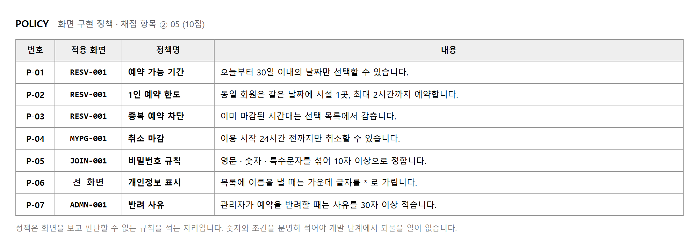
| 구분 | 예 |
|---|---|
| 정책이 되는 것 | 예약 가능 기간 · 1인 예약 한도 · 취소 마감 시각 · 비밀번호 규칙 · 개인정보 가리기 · 반려 사유 글자 수 |
| 정책이 아닌 것 | 버튼 색 (콘셉트 기획서) · 화면 이동 순서 (화면 흐름도) · 입력칸 배치 (UI 기능정의) |
숫자와 조건을 분명히 적습니다. 문장이 흐릿하면 개발 단계에서 되묻게 되고, 그 자체가 정책을 쓴 뜻을 잃는 것입니다.
감점 예약은 적당한 기간 안에만 가능하다
권함 오늘부터 30일 이내의 날짜만 선택할 수 있습니다
감점 취소는 너무 늦지 않게 해야 한다
권함 이용 시작 24시간 전까지만 취소할 수 있습니다
무엇을 적어야 할지 떠오르지 않을 때는 화면마다 아래 네 가지를 물어봅니다. 대개 화면 하나에서 한두 줄씩 나옵니다.
네 가지에서 나온 답을 적으면 대여섯 줄이 채워집니다. 열 줄을 넘길 필요는 없습니다. 정책이 많아지면 어느 것이 지켜졌는지 확인하기 어려워집니다.
정책 번호는 P-01 처럼 매깁니다. 다음 단계에서 UI 기능정의를 쓸 때 이 번호를 그대로 끌어 씁니다.
화면 하나가 한 쪽입니다. 왼쪽에 화면, 오른쪽에 설명 두 표가 들어갑니다.
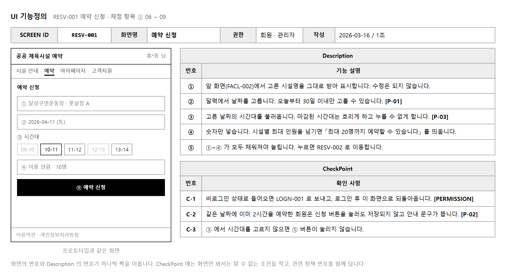
| 항목 | 배점 | 보는 것 |
|---|---|---|
| ② 06 | 10 | 붙인 화면이 프로토타입과 같은 모양인가 |
| ② 07 | 10 | 머리글의 SCREEN ID 가 화면정보의 ID 와 같은가 |
| ② 08 | 10 | Description 이 항목별로 적절히 적혀 있는가 |
| ② 09 | 10 | CheckPoint 가 올바르게 적혀 있는가 |
화면 위에 ①②③ 를 올리고 Description 에 같은 번호로 설명을 답니다. 번호는 사용자가 눈으로 훑는 순서, 곧 위에서 아래로 붙입니다.
둘을 섞어 쓰는 조가 많습니다. 기준은 간단합니다.
한 줄에 세 가지를 담습니다. 세 가지가 다 필요한 것은 아니고, 그 번호에 해당하는 것만 씁니다.
| 담을 것 | 쓰는 말 | 예 |
|---|---|---|
| 받는 값 | 무엇을 · 어떤 방식으로 | 달력에서 날짜를 고릅니다 |
| 제한 | 범위 · 조건 · 정책 번호 | 오늘부터 30일 이내만 고를 수 있습니다 [P-01] |
| 결과 | 누르면 어디로 · 무엇이 바뀌는지 | 누르면 RESV-002 로 이동합니다 |
약함 날짜를 선택하는 부분
권함 달력에서 날짜를 고릅니다. 오늘부터 30일 이내만 고를 수 있습니다. [P-01]
위 문장은 명사로 끝나 무엇을 하라는 것인지 알 수 없습니다. 아래 문장은 개발자가 그대로 만들 수 있습니다.
CheckPoint 칸을 비워 두는 조가 해마다 나옵니다. 10점짜리 항목입니다. 떠오르지 않을 때는 아래 세 가지를 차례로 물어봅니다.
세 가지를 물으면 화면마다 최소 두 줄은 나옵니다. 나오지 않는 화면은 목록 화면처럼 사용자가 손댈 것이 없는 화면뿐입니다.
RESV-001 한 쪽을 처음부터 끝까지 어떻게 채웠는지 따라가 봅니다.
여기까지 하면 한 쪽이 끝납니다. 익숙해지면 화면 하나에 10분 안팎이 걸립니다. 아홉 화면이면 두 시간 정도를 잡아 두면 됩니다.
감점 CheckPoint 칸을 「—」 로 비워 둠
권함 권한 · 중복 · 빈 값 세 가지를 기준으로 한 줄씩 찾아 적습니다
제출 전에 채점표를 그대로 옮겨 적고, 항목마다 근거가 되는 쪽 번호를 적습니다. 쪽 번호를 적을 수 없는 항목이 곧 빠진 항목입니다.
| 항목 | 확인할 것 | 근거 쪽 |
|---|---|---|
| ① 01 | 프로토타입과 화면흐름도가 같은가 | |
| ① 02 | 프로토타입과 메뉴구조가 같은가 | |
| ① 03 | 사용자 요구사항을 만족하는 메뉴구조인가 | |
| ① 04 | 라이프스타일이 반영된 결과물인가 | |
| ① 05 | 화면정보의 내용 구조와 UI 화면이 맞는가 | |
| ① 06 | 화면정보에 SCREEN ID 가 올바르게 부여되었는가 | |
| ② 01 | FLOWCHART 도형을 올바르게 썼는가 | |
| ② 02 | FLOWCHART 의 흐름이 올바른가 | |
| ② 03 | 판단 기호의 결과 메시지를 표시하는가 | |
| ② 04 | 유저별 Permission 이 올바른가 | |
| ② 05 | 화면별 정책이 부여되어 있는가 | |
| ② 06 | UI 기능정의에 프로토타입과 같은 화면이 있는가 | |
| ② 07 | 화면정보의 ID 와 UI 기능정의의 ID 가 같은가 | |
| ② 08 | 항목별 Description 이 적절한가 | |
| ② 09 | UI 기능정의별 CheckPoint 가 올바른가 |
작업지시서의 제출 방법은 「각 항목 묶어서 PPT 로 제출」 입니다. 항목별로 파일을 나누어 내면 채점자가 순서를 맞춰 보아야 하므로 불리합니다.
아래 여섯 가지가 해마다 되풀이되는 감점입니다. 모두 시간이 모자라서가 아니라 대조를 건너뛰어서 생깁니다.
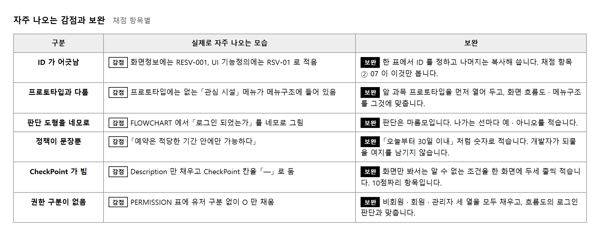